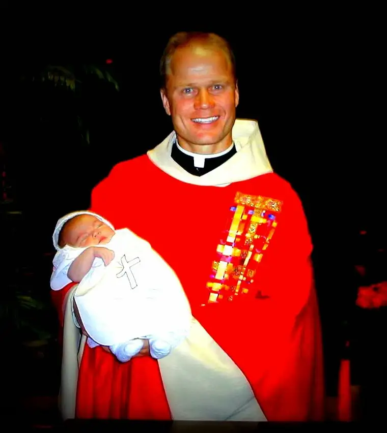

This is old news, from a study done several years ago — 2011 — but I remember reading about it and I’ve thought about it a lot in the ensuing years — the finding that priests are among some of the happiest folks around.
 |
| Father Tim and Baby Beth, June 11, 2000 |
{kind=link}
The results struck me for several reasons. One, priest scandals and other issues surrounding the Church had erroneously led me to conclude that because of all these “clergy gone wrong” stories, certainly, morale must be down within the clergy. So priests happy? What gives?
A Zenit article from that same year suggested several reasons for our surprised reaction to the finding. “Some modern thinkers suggest that the only way to true human happiness is to be freed from the constraints of religion. They see religion as repressive of one’s true human freedom and humanity. Thus, using this logic, being a priest must be the unhappiest life of all.”
The article also noted that, “To hear that priests are among the happiest people in the country is met with disbelief…The fact of priestly happiness is a fundamental and powerful challenge to the modern secular mind.”
Thinking also from the modern-day perspective, one might be tempted to conclude sacrifices inherent in the work of the clergy, such as the vow of celibacy, might contribute to a lower job satisfaction rates. After all, we are led to believe the antidote for unhappiness is an unencumbered life with sexual intimacy at the ready.
But I’ve been around enough priests to know that something else was going on in the interior — something beyond what we read about in the newspapers. Though I’m sure there are a fair number of glum priests, I haven’t bumped into a whole lot of them, and even more, I’ve heard more than a few priests express their absolute love for their job, how even though it brings challenges, they would not trade their job for anything, and they would, in fact, choose it all over again if given the chance.
Since so many of us are constantly searching for happiness, this seems fairly relevant and significant. While there may be many contributing factors to the outcome, after pondering this whole thing recently, I came up with a summary of why I believe clergy are among the happiest people around. And it all surrounds this idea: the inside matches the outside.
Many years ago, I attended a retreat given by an old Irish priest, and he defined happiness as the merging of the desires of the heart, the interior, with the lived reality on the exterior. The more those two are in sync, he’d said, the happier the person.
This made an impression because at the time there was a lack in my life. I wasn’t living the majority of my life with my interior and exterior in sync. Feeling the separation of the two on a daily basis left me unsettled. I was in fact living with what I see now as a wretched disparity, which led to much discontent.
But things have changed. Something began to happen to me as a result of that retreat that made me want the inside and outside to match. I knew what that priest was saying was right: that if I could get my two selves in accordance, I would be much more at peace.
I’m grateful to say that though I am not part of the clergy, I do feel that continuity at this point in my life, and yes, it makes a huge difference. Though not every day is bliss, I do feel a great synchronicity between the stirrings of my soul and my vocation as a wife, mother and writer. And of course, living with this reality, I wish everyone could feel this harmony, even knowing it’s not always easily or quickly achieved. The pursuit is worth it, however.
In the case of the priest, even with all the challenges that go with that life, by and large, the inside and outside are well-matched, and form a continuity. They are free, even encouraged, to live on the outside what the inside is dictating, especially when they are close to the Lord. And this can be our lot as well.
As it turns out, job satisfaction has very little connection to pay or social status. As this “Catholic Hotdish” blogger put it, “People are fulfilled when they are doing something worthwhile — when they have a job they feel makes a difference in the world.” If you’re a parent, you have a job that makes a difference in the world, no doubt about it.
Q4U: Does your inside match your outside, or are the two like two opposing sides of a magnet? If you are living with discord in this regard, what might you do to change that?